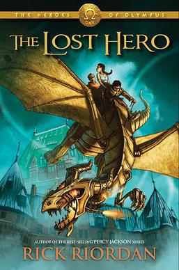

The story follows Jason Grace, a Roman demigod with no memory of his past. He, along with Piper McLean, a daughter of Aphrodite, and Leo Valdez, a son of Hephaestus, are given a quest to rescue Hera, the queen of gods, from the clutches of Gaea, the primordial goddess of the earth. It is the first book in the Camp Half-Blood chronicles to use third-person narration, switching between the points of view of Jason, Piper, and Leo..